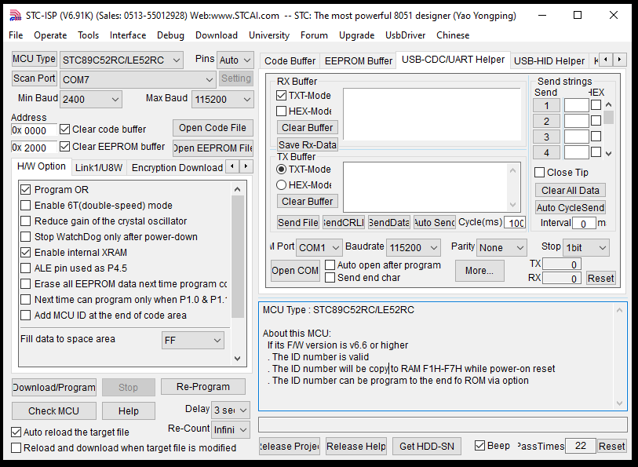
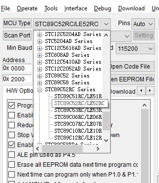
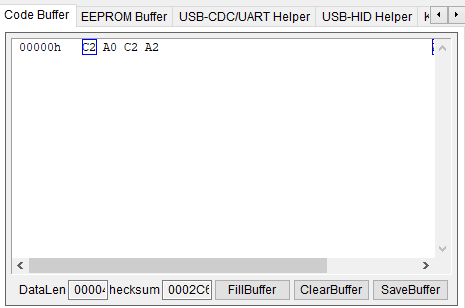
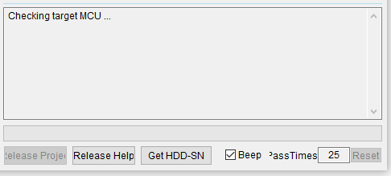
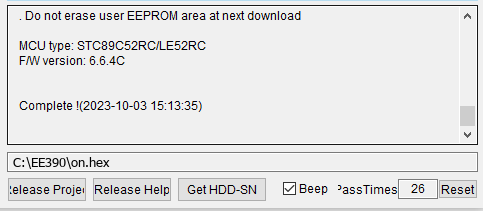

Getting Started
Install the tools, connect the board and burn your first program, in assembly, C, or both. By the end of this page the left-most LED on your board will be on.
What you need
Hardware
Puzhong 51 A2 development board (STC89C52) and its USB cable. Optional: a 5 V DC motor.
MIDE-51 ASM
Free editor + assembler. Turns your .asm file into a .hex file. You can also use it as the editor for C files.
SDCC C
Free C compiler for the 8051. Install version 4.5 and tick “Add to PATH”. Use it with our build.bat helper.
STC-ISP
Programmer that writes the .hex file onto the microcontroller over USB.
CH340 USB driver
Usually installs automatically. Install it manually if no COM port appears for the board.
Prefer video?
A short walkthrough of programming the board with STC-ISP.
Step by step
-
Connect the board
Plug the board into your computer with the USB cable. Note where the blue power button is — you will need it in step 6.

The LEDs are on port P2; the USB input and power button are on the left edge. -
Find the board's COM port
Open Device Manager → Ports (COM & LPT) and look for USB-SERIAL CH340 (COMx). Remember the number. If nothing appears, install the CH340 driver above and reconnect.
-
Write and build your first program
The program turns on the LED connected to
P2.0. The LEDs are active-low, so writing 0 to the pin turns the LED on. Pick the language you're using:In MIDE-51, create a new file, save it as
on.asm, and type:CLR P2.0 ENDBuild the file. MIDE-51 writes
on.hexinto the same folder as your.asmfile.Create a folder with
build.batin it, and save this ason.cin the same folder:#include <8052.h> /* names for the 8051 registers and pins */ void main(void) { P2_0 = 0; /* LED D1 on */ while (1) /* never return from main */ ; }Open Command Prompt in that folder (type
cmdin Explorer's address bar) and run:build onThis runs
sdcc -mmcs51 on.candpackihx, and writeson.hex. If it says 'sdcc' is not recognized, SDCC is not on your PATH: reinstall it with “Add to PATH” ticked. -
Open STC-ISP and select the MCU and port
Set MCU Type to
STC89C52RC/LE52RC(under STC89C52RC Series) and set Scan Port to the COM port from step 2.
The four controls you use: MCU Type, Scan Port, Open Code File, Download/Program. 
Choose STC89C52RC/LE52RC. -
Load the .hex file
Click Open Code File and select
on.hex. The machine code appears in the Code Buffer tab. For the assembly program it is justC2 A0(CLR P2.0). The C version is longer, because SDCC adds start-up code that sets up the stack and clears RAM beforemain()runs.
-
Program the board (cold start)
Click Download/Program. STC-ISP shows Checking target MCU… and waits. Now switch the board OFF and ON with the blue power button — programming only starts after a power cycle.

Waiting for the power cycle. 
“Complete!” means the program is on the chip. -
Check the result
The left-most LED should now be on. You are ready to write your own programs: try the examples (assembly and C) next, and read the Wiki to learn how the chip works.
Troubleshooting
| Symptom | Try this |
|---|---|
| Stuck on “Checking target MCU…” | Power-cycle the board with the blue button after clicking Download/Program. Check that the COM port is correct. |
| No COM port for the board | Install the CH340 driver, try another USB cable (some cables are charge-only) or another USB port. |
| Programming succeeds but nothing happens | Make sure you loaded the newest .hex file, and that your code does not fall off the end — add an infinite loop such as HERE: SJMP HERE before END. |
| Wrong or garbled output on the LCD / 7-segment display | Both share port P0. Check the pin map and the jumper settings described in the board manual. |
| C 'sdcc' is not recognized | SDCC is not installed or not on your PATH. Reinstall SDCC 4.5 and tick “Add to PATH”, then open a new Command Prompt. |
C STC-ISP rejects the .hex file, or the program doesn't start | Build in Command Prompt with build.bat. In PowerShell, packihx x.ihx > x.hex adds an invisible encoding marker to the start of the file, which can hide its first line (the reset jump) from programming tools. |
| C Interrupt routine never runs | The ISR's prototype, e.g. void timer0_isr(void) __interrupt(1);, must appear in the file that contains main(). Also check ET0/EA and TR0. |
| Serial terminal shows garbage | Use 9600 baud, 8 data bits, no parity, 1 stop bit (with TH1 = FDH on the 11.0592 MHz crystal). |